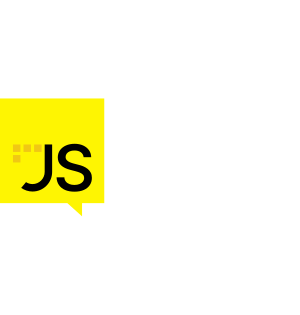

JS-Nation 
Geïnspireerde lightning talks
Js Nation, Amsterdam 12 juni
Agenda
State of dev meetup Quiz
State of html / javascript / css
Transformers.js - Machine learning for the web
Google ai api
SignalR
Links
# Over welk front-end framework zijn de gebruikers het meest tevreden?
- [ ] React
- [ ] Angular
- [ ] Mootools
- [x] Solid
De top ranking op basis van satisfaction is: Solid (90%), Vue (88%), Svelte (87%)
# Wanneer was de laatste update van jQuery?
- [ ] 2014
- [ ] 2017
- [ ] 2022
- [x] 2024
De laatste niet beta release is van 28 augustus 2023, versie 3.7.1
# Volgens de state of js, hoeveel % van de devs schrijven op dit moment het merendeel van de code met AI
- [ ] 5%
- [x] 13%
- [ ] 48%
- [ ] 72%
13% van de developers schrijft op dit moment het merendeel van de code met AI.
# Wat is een nieuwe feature in css, de afgelopen jaar?
- [x] :has()
- [ ] float: right
- [ ] :focus-visible
- [ ] Text-wrap: pretty
Js Nation, Amsterdam 12 juni
:has()
ul:has(li button) {
border: 2px solid blue;
}
Je zou dit voorheen met JavaScript moeten oplossen, omdat CSS geen mogelijkheid had om een ouder op basis van een kind te selecteren.
# Wat is ouder Tijs Latiers of Cobol?
- [x] Cobol
- [ ] Tijs
- [ ] Ze zijn even oud
> Tijs is geboren in 1965, Cobol is ontwikkeld in 1959
> Tijs wordt komende week wel 60! 🎉
Js Nation, Amsterdam 12 juni
State of html / javascript / css developers
Transformers.js
Machine learning for the web.
Voorbeelden:
Image classification
Text generation
Speech recognition
Object detection
- Transformers.js is een library waarmee je state-of-the-art machine learning modellen kunt gebruiken in de browser.
- Port van Transformers uit Python.
- Het maakt gebruik van WebAssembly, WebGPU om hoge prestaties te leveren, zelfs op mobiele apparaten.
- In NodeJs kun je het ook gebruiken (enkel CPU support).
- datasets en Modellen out of the box te gebruiken van huggingface.co, of je eigen modellen trainen en gebruiken.
Chrome build in Gemini Nano
Wat kan je er mee doen
Waarom
Nadelen
Chrome://flags
prompting voorbeeld
const session = await LanguageModel.create();
const response = await session.prompt(
'kan je uitleggen wat javascript is?'
)
summarize voorbeeld
// headline voor artikel tweakers.net
const summarizer = await Summarizer.create({ type: 'headline', length: 'short'});
const tweakersNieuws = document.querySelector('.articleContent .article').textContent;
await summarizer.summarize(tweakersNieuws);
translator voorbeeld
// detect language
const languageDetector = await LanguageDetector.create();
const detectedLanguages = await languageDetector.detect('Dit is een test');
detectedLanguages[0];
// vertalen
const detectedLanguage = detectedLanguages[0].detectedLanguage;
const translator = await Translator.create({
sourceLanguage: detectedLanguage,
targetLanguage: 'en'
})
translation = await translator.translate('Dit is een test');
available?
// availability
await LanguageModel.availability();
await Summarizer.availability();
await LanguageDetector.availability();
await Writer.availability();
await Rewriter.availability();
await Translator.availability();
// "unavailable", "downloadable", "downloading", "available"
SignalR Front-end
- Maak een connectie naar de hub (URL hangt af van je backend)
- Luister naar een bericht van de server
- Als er een bericht binnenkomt, dan wordt er een vuurwerk animatie gestart
Links
- Presentatie gemaakt in reveal.js met de quiz plugin van reveal.js